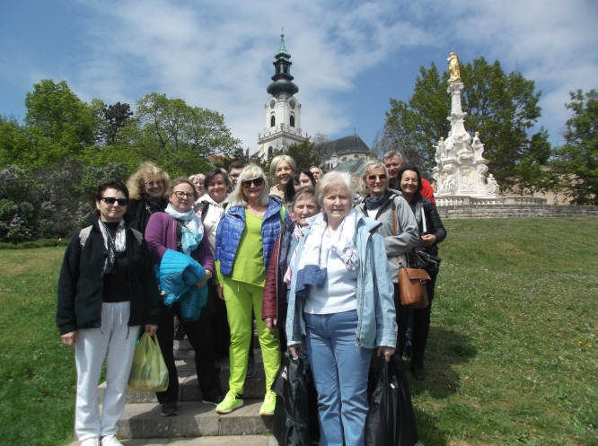
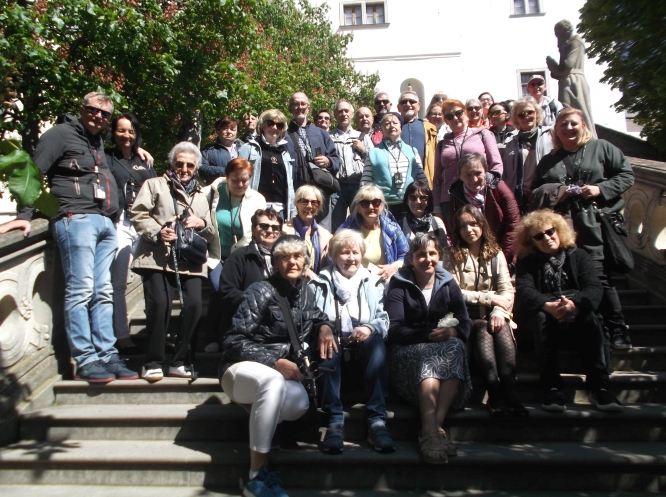
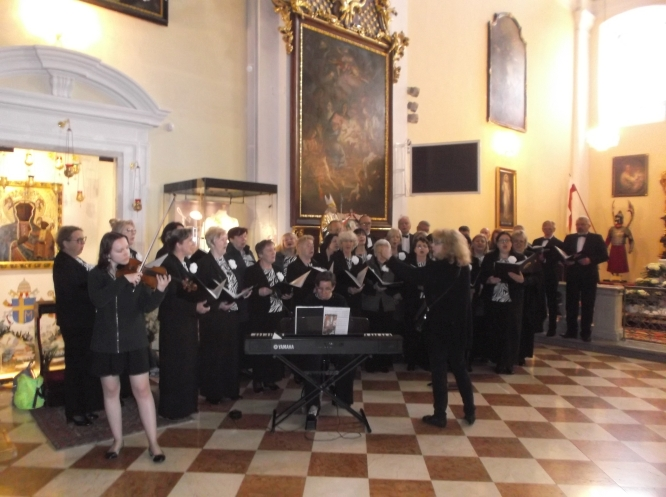
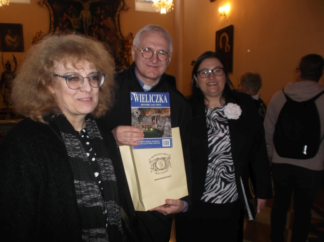

A tymczasem w Cameracie...
.
2023-04-30
Już po raz 26 w swojej historii Chór Camerata, działający pod Patronatem Wielickiego Centrum Kultury koncertował za granicą. Celem wyjazdu koncertowego była Słowacja oraz Austria. 
Na zaproszenie Ambasady RP w Republice Słowacji Wielicki Chór Camerata pod dyrekcją Izabeli Szoty wystąpił w katedrze Św. Emmerama w Nitrze. W ten szczególny sposób wraz z rodakami ze Słowacji świętował Dzień Polonii i Polaków za Granicą oraz 232 rocznicę uchwalenia Konstytucji
3 Maja.W uroczystościach wziął udział Ambasador RP w Republice Słowacji Krzysztof Strzałka oraz Konsul RP w Republice Słowacji Katarzyna Sołek. Licznie zgromadziła się też Polonia z Nitry oraz okolic.
Chór zapewnił oprawę Mszy Świętej, a następnie podczas koncertu zaprezentował różnorodny repertuar, w którym nie zabrakło pieśni patriotycznych oraz dzieł kompozytorów takich jak Mikołaj Gomółka, Stanisław Moniuszko, Jan Sebastian Bach czy Franz Schubert.
Chórowi akompaniowała Agnieszka Korczyńska, oraz skrzypaczka Jadwiga Korab Chrzanowska.
Na zaproszenie Prezesa Festiwalu Gloria Artis w Wiedniu - Jadwigi Padjas, w dniu 1 maja Chór Camerata wystąpił w Polskim Sanktuarium Narodowym na Kahlenbergu. Msza Święta miała szczególnie uroczysty charakter. Licznie zgromadzona Polonia nagrodziła występ zespołu gromkimi brawami, a Camerata śpiewem modliła za Polskę i Polaków, a także wszystkich chórzystów oraz członków ich rodzin.

Kahlenberg jest miejscem szczególnym, w którym każdy Polak może być dumny ze swojej historii – te słowa ks. Romana Krekory rektora Kościoła Św. Józefa z pewnością pozostaną na długo w pamięci.

Dziękujemy serdecznie wszystkim partnerom, którzy pomogli w realizacji tego projektu. Wyjazd Chóru Camerata był możliwy dzięki pomocy i wsparciu finansowym Burmistrza Wieliczki, Powiatu Wielickiego, Wielickiego Centrum Kultury, Kopalni Soli w Wieliczce oraz Ambasady RP w Republice Słowackiej.
Tekst
Magdalena Thomas

© Stowarzyszenie Muzyczne Chór Camerata Wieliczka